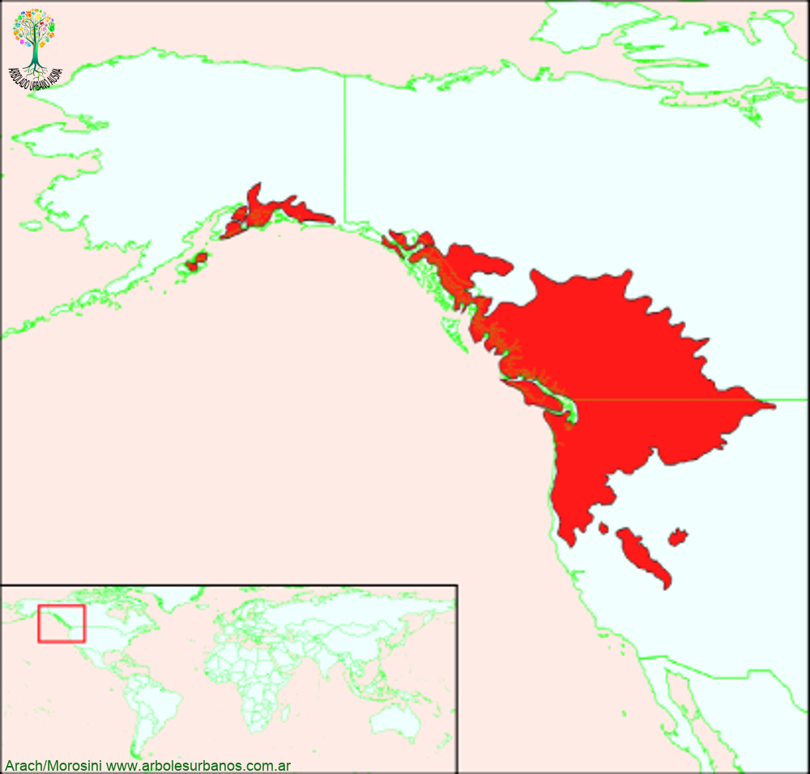

Click en las imágenes para ampliar

{kind=link}
{kind=link}
{kind=link}
{kind=link}
{kind=link}
{kind=link}
{kind=link}
- NOMBRE CIENTÍFICO
- Populus trichocarpa
- FAMILIA BOTÁNICA
- Salicáceas
- DESCRIPCIÓN GENERAL
- Este álamo es un árbol de gran porte superando los 35 metros de altura (en su lugar de origen hay ejemplares registrados de 60 metros de altura y de 2.5 metros de diámetro a la altura del pecho).Tiene una copa anchamente columnar o piramidal, dependiendo de la cercanía y tamaño de otros árboles. Su corteza juvenil es lisa y de un color verde grisáceo, agrietándose con la edad. Sus hojas están dispuestas de forma alterna, son de forma acorazonada color verde oscuro en la cara superior, la inferior de un verde más claro y pubescente, luego antes de caer en el otoño, toman tonalidades amarillas y ocres.
- FRUTOS
- Los frutos son cápsulas formadas por tres valvas, que guardan en su interior a las semillas, estas son pequeñas y blancas, acompañadas de fibras algodonosas que se liberan a fines de la primavera.
- ORIGEN
- Este álamo es el más grande de las especies de álamos nativas de Norte América, su rango de dispersión natural es la costa pacífica del continente desde norte de California hasta la Columbia británica y Alaska
- USOS
- Su madera es blando y liviana, se la utiliza para debobinado para cajonería y envases, también se lo utiliza para producir pasta de celulosa. Se lo cultiva en muchos lugares para formar cortinas rompevientos y a las veras de los caminos.
- REPRODUCCIÓN
- La manera más fácil de reproducir esta especie, como las demás salicáceas (Álamos y Sauces) es la multiplicación asexual, por medio de estacas.
- PARTICULARIDADES
- Antes de que aparezcan las hojas, las yemas y los brotes segregan un líquido pegajoso y fragante de color ambarino, que los pueblos originarios de Norteamérica lo utilizan con fines medicinales
Álamo balsámico
FLORES: Las flores aparecen a fines del invierno, están separadas por sexo, aunque en el mismo árbol,, son poco atractivas, pequeñas, las masculinas están reunidas en amentos, más pequeñas que las femeninas que llegan a formar grupos de más de 10 cm. de largo cuando están maduras.